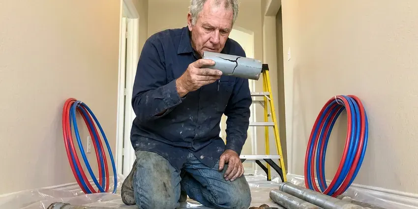

New Construction Plumbing in Taunton, MA
For new home builds across Taunton, MA, BWM Plumbing installs PEX supply lines and PVC drain, waste and vent sized from your fixture count.
- Licensed Plumbers
- Seasoned Plumbers
- Fast Bids From Your Plans
- Long-Life Materials
Your New Build Needs Plumbing Done Right in Taunton, MA.
Send us your plans and we will return an itemized bid with dates for each phase.
Plumbing for New Homes and Additions in Taunton, MA
BWM Plumbing works with builders and homeowners in Taunton, MA from the first plan review to the final walkthrough. Before a single hole is drilled, we check drain sizing against code and look for conflicts with joists and beams. Small catches save big money. Finding a 3-inch drain against a beam on paper costs nothing.
Our expertise includes:
- Under-slab drain, waste and vent systems with sleeved slab penetrations.
- Fixture setting for kitchens and baths during trim-out.
- Rough-in plumbing for new homes and light commercial work.

Additional Plumbing Maintenance Services in Taunton, MA
Our maintenance and specialty plumbing services in Taunton, MA protect your home year-round and extend the life of every system.


Customers
Why Choose BWM Plumbing for New Construction Plumbing in Taunton, MA?
Site cleanliness counts more than people think. We haul off PEX scraps and glue cans at the end of each day. Nobody on site should be stepping over our cutoffs or moving a coil of PEX to get to their own work. Small thing, but supers notice.
- Schedule Discipline, We book underground, top-out and trim dates when you sign and hold them.
- Proper Materials, We pick pipe and fittings for the local water and soil, not just for the lowest price.
- Code Compliance, Work follows the Massachusetts plumbing code and any Taunton amendments, which keeps reinspection fees off your bill.
Citywide Coverage
We plumb new builds in every part of Taunton, from infill lots in older blocks to new subdivisions on the edge of town. Infill lots bring surprises. The old lateral may be shallow clay in an unmarked spot, which is why we find it before we set the drain elevation.
Experienced Team
Production builders and one-off custom homes need different things from a plumber. Speed matters on production. On a custom home, the details carry more weight, like centering a freestanding tub drain on a tile layout or roughing in a pot filler at exactly the height the designer drew.
Safety-First Approach
Code compliance gets checked by us before the inspector sees it. We check trap arm lengths, vent sizes and drain slope against the code tables. Then we test. A drain test holds water to the highest fitting for fifteen minutes, and supply lines hold pressure long enough to show any slow leak at a crimp or a glued joint.
Trusted Certified Taunton Plumbing Services Professionals
At BWM Plumbing, we take pride in licensed, certified plumbing services throughout Taunton, MA. Credentials matter in this trade. Our plumbers hold recognized industry credentials, and they follow strict safety and quality rules on every repair, installation and maintenance call we run.
Call Us Now PHCC Plumbing Contractor Recognition
PHCC Plumbing Contractor Recognition Better Business Bureau (BBB) Accreditation
Better Business Bureau (BBB) Accreditation Angi Certified Pro
Angi Certified Pro ISO 9001 Quality Management Certification
ISO 9001 Quality Management CertificationNew Construction Plumbing Services in Taunton, MA
Residential New Construction Plumbing in Taunton
Layout drives cost on a house. Grouping the kitchen, laundry and baths along one wet wall can cut a few hundred feet of pipe out of a plan. We point out those savings during plan review. Moving a toilet on paper is free, and moving it after the pour means a saw and a jackhammer.

Fixture Installation and Finishing in Taunton, MA
Final trim is the visible part, so we take our time with it. Caulk lines matter here. Toilets go down level and tight to the floor, faucets get set before the backsplash where we can, and every supply line gets checked for leaks after an hour of use. We call final once every fixture is set and running.
Rough-In and Top-Out Plumbing in Taunton, MA
Once framing is up, our crew runs supply and vent lines through the walls and attic. Every stub-out for sinks, showers and appliances is set to the cabinet and tile drawings. Nail plates protect pipe near stud faces. Shower valves get set to the finished wall depth the tile setter gives us, which saves cutting tile around a trim plate that sits too deep.
Permits and Inspections for New Plumbing in Taunton, MA
Most new homes get a plumbing inspection at underground, another at top-out, and a final. Our crew schedules each inspection and is on site with the test running when the inspector arrives. Green tags go to the super. If the inspector writes a correction, we fix it the same day or the next morning so the slab or drywall date does not move.
Sewer and Water Main Connections in Taunton, MA
Tying a new house to the city water main and sewer usually means a tap permit and a utility inspection. Rocky glacial soil and shallow ledge are common in Massachusetts, which can make digging for sewer and water lines slower and more expensive. We trench at the depth the utility specifies and use tracer wire on plastic water services so the line can be located later. The meter setter comes first. We check street pressure and add a pressure-reducing valve when it tops 80 psi.
Plumbing Rough-In Services in Taunton
Rough-in covers every pipe that ends up inside a wall or floor. Holes through bearing studs stay within the framing code limit, usually 40 percent of the stud width. Vents go up through the roof. Every trap arm is sized and sloped for the distance to its vent.
In-Wall Plumbing Services in Taunton
Top-out is the second half of rough-in, after framing. We run supply lines, drains and vents through the walls and attic and set every stub-out to the cabinet drawings. Then the system gets tested. Drains get a water test, filled to the highest fitting, and supply lines hold pressure on a gauge while the inspector walks it.

Underground and Under-Slab Plumbing in Taunton
Underground work sets the drain, waste and vent layout that every fixture in the house relies on. Rocky glacial soil and shallow ledge are common in Massachusetts, which can make digging for sewer and water lines slower and more expensive. We trench, bed the pipe, and set stubs to the form boards so they come up exactly where the plans show. Two inches off puts a drain under a plate. Before the pour we water test the whole system with a test ball and a standpipe.
New Construction Plumbing Close By in Taunton, MA
Local builders send us repeat work because our underground crews show up on the day we booked. No-shows cost builders money. Most of our new construction calls come from supers we have worked with before. They have seen us test before every inspection and keep the site clean, which is rarer in this trade than it should be.
Searching for a new construction plumber near me in Taunton usually starts a week before forms go up. We can usually walk the lot within two days. With the plan set in hand, we mark stub locations on the form boards ahead of the concrete crew. The underground follows right after.
BWM Plumbing at a Glance
- Licensed and insured plumbers serving Taunton, MA
- 24/7 emergency service with same-day scheduling
- Upfront, flat-rate pricing before work begins
- 4.9-star rated by 434+ Massachusetts customers
Taunton Map
Taunton Information
- Population
- 60,412
- Area codes
- 508/774/401
- Service area
- Taunton and towns within a 40 mile drive
- Nearby
- Fall River, Brockton, New Bedford, Weymouth Town
Pipe and layout decisions made before the slab is poured shape how the house works for fifty years. Much of the public water in Massachusetts is soft and slightly acidic, which is easy on fixtures but can slowly eat through copper pipe. Supply material and any softener loop get planned for it.
Expert Services
Call BWM Plumbing for honest, reliable plumbing from people who know the trade in Taunton, MA.
Our Specialized Plumbing Services in Taunton, MA
At BWM Plumbing, we handle the full list of plumbing services across Taunton, MA. We go from leak detection all the way to full system installations, for homes and commercial buildings, and we do it quickly at a fair price. Explore our core services below:


How Our New Construction Plumbing Process Works in Taunton, MA
We keep new construction plumbing simple: an itemized bid and a walkthrough at the end.
Request a Quote
Call (857) 335-4894 to set up a meeting. We review the blueprints and talk through budget and timeline.
Layout Planning
We help with layout and pipe sizing so the system fits the house. Water heater location gets settled now.
Rough-In Installation
We install supply, drain and vent piping before drywall. Everything is tested and inspected.
Frequently Asked Questions About New Construction Plumbing in Taunton
Bathroom count drives the cost more than square footage does. A slab home is often a little cheaper to plumb than a basement home, because basement drains may need an ejector pump and the layout uses more vertical pipe. Gas piping is priced separately. A square-foot guess misses too much, so we bid from plans.
Most jurisdictions inspect plumbing three times. First comes underground, with drains holding a water or air test before the pour. Top-out gets inspected before insulation, and the final comes after fixtures are set and running. Some add a gas test.
Plumbing is usually covered under the general building permit. If the jurisdiction wants a separate plumbing permit, our license goes on it. Either way the plumbing inspections and corrections are our job, and the builder never has to chase us.
In many homes, yes. Much of the public water in Massachusetts is soft and slightly acidic, which is easy on fixtures but can slowly eat through copper pipe. Roughing in a loop is cheap now, and adding one after drywall means opening walls. Capped loops can wait for a softener later.
PEX-A is our default for water supply in Massachusetts homes. It tolerates hot water and avoids the pinhole leaks copper can develop in some water. We run drains in Schedule 40 PVC. Under slabs, we keep joints to a minimum and use long-sweep fittings at every change of direction so a cable or camera can get through later.
Humid summers bring condensation on cold water lines and damp basements, which can hide slow leaks until damage appears. Frozen pipes are a real winter risk across Massachusetts, especially during stretches of single-digit nights and strong wind. Pipe routes and insulation get chosen to match. Often it means no supply lines in exterior walls, insulation on attic runs and frost-free hose bibs. Attics get the most attention.
We can run a dedicated return line during rough-in. Hot water then reaches distant bathrooms in seconds. A dedicated line works better than a crossover valve under a sink, which sends hot water back through the cold line and can leave the cold tap lukewarm for a moment. The pump needs an outlet.
We handle the plumbing permit work and inspections on our scope. Your builder usually pulls the main building permit. Our office then schedules each plumbing inspection, meets the inspector on site, and fixes any correction notice before the next trade needs that wall or slab.
What Our Customers Say About Our Plumbing Experts

Robert G.
The camera showed a full break in our clay sewer line near the street. BWM Plumbing replaced it with a trenchless pipe burst, so the only digging was two small pits in the yard. They let us watch the footage before and after.
Sewer Line Replacement · New Bedford, MA
Jessica T.
We were adding a gas range in a kitchen remodel and needed a new line run from the meter. The plumber pulled the permit, ran the pipe through the crawl space, and had it inspected and approved within the week.
Gas Line Repair · Weymouth Town, MA
Karen W.
After our third pinhole leak in copper, we stopped patching. BWM Plumbing gave us a written plan room by room and repiped the house in PEX while we stayed in it. The crew covered our floors every morning and cleaned up every night.
Repiping · Fall River, MASofia M.
Two new toilets went in during one visit. The tech set them on new wax rings and swapped the old supply lines. He also noticed our bathroom faucet dripping and replaced the cartridge while he was there. No mess left behind.
Toilet Installation · Taunton, MA
Paul B.
Our pit pump ran nonstop even in dry weather. The plumber found the check valve was stuck open, so the same water kept cycling back into the pit. New valve, new float switch, done in an hour. It runs quiet now.
Sump Pump · Weymouth Town, MALaura S.
Our 40 gallon tank started leaking from the bottom after thirteen years. The tech hauled the old one out, set a new unit with a fresh expansion tank, and had hot water running in about four hours. He took the old tank with him too.
Water Heater Replacement · Weymouth Town, MA